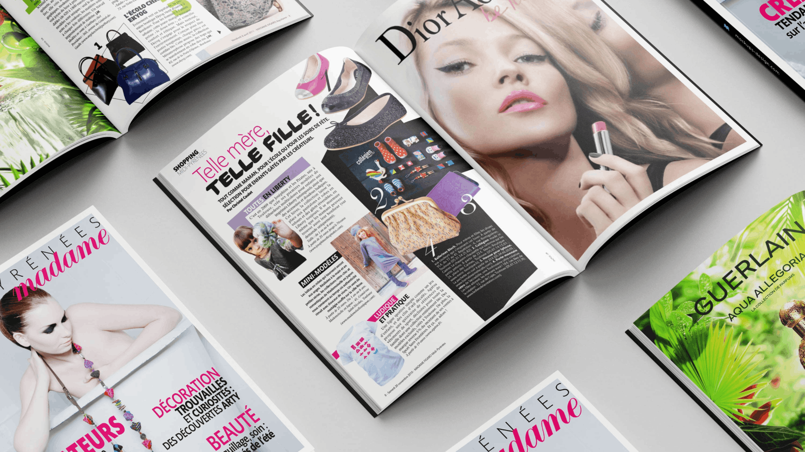
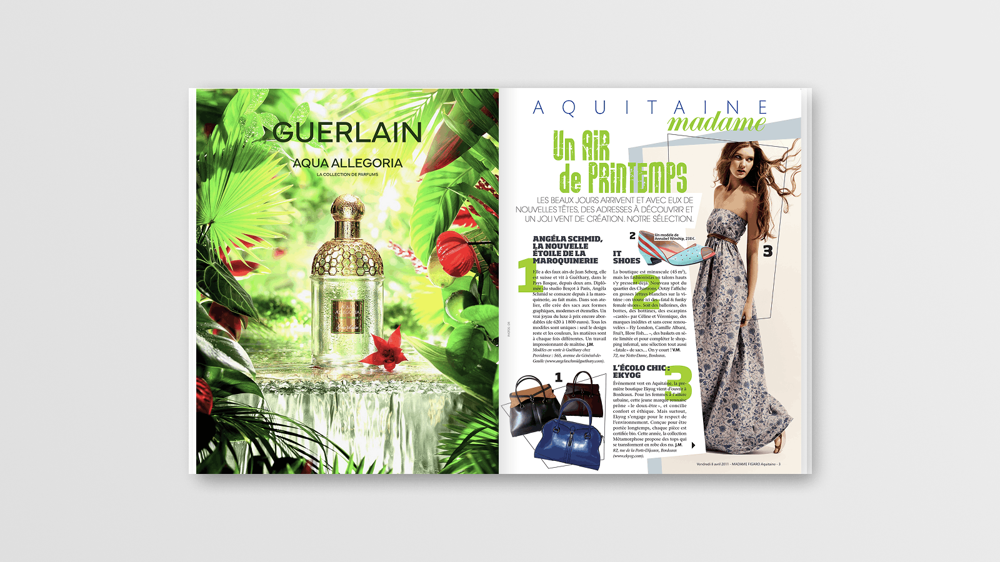
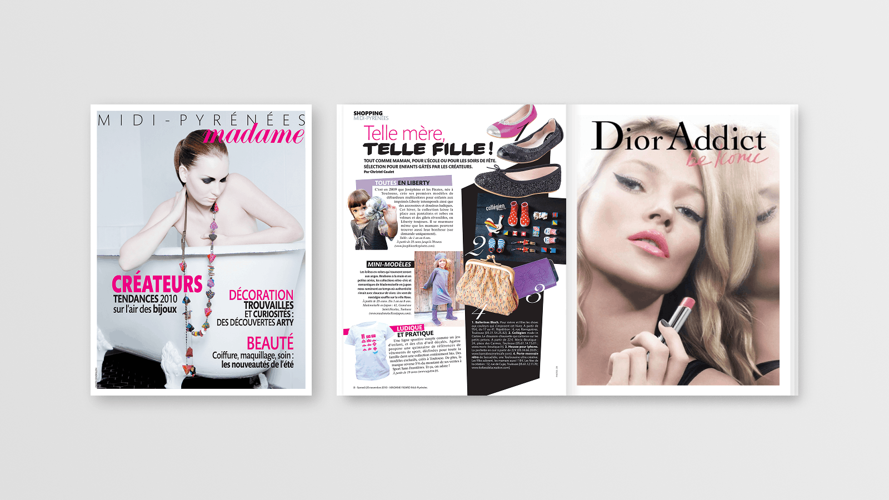
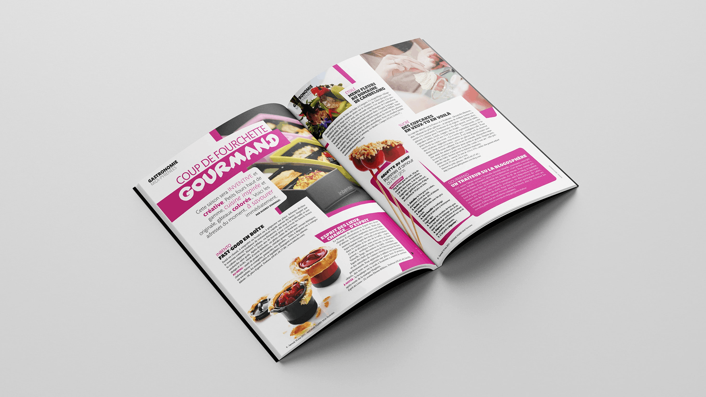
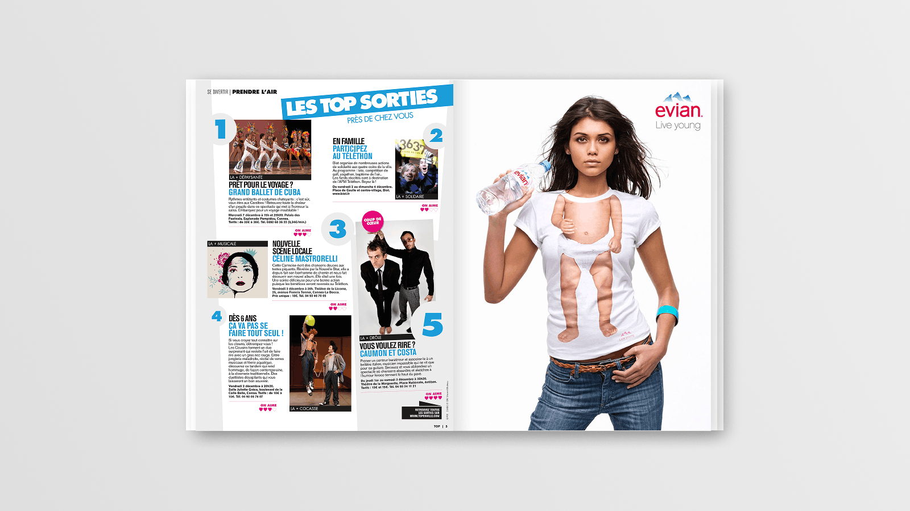
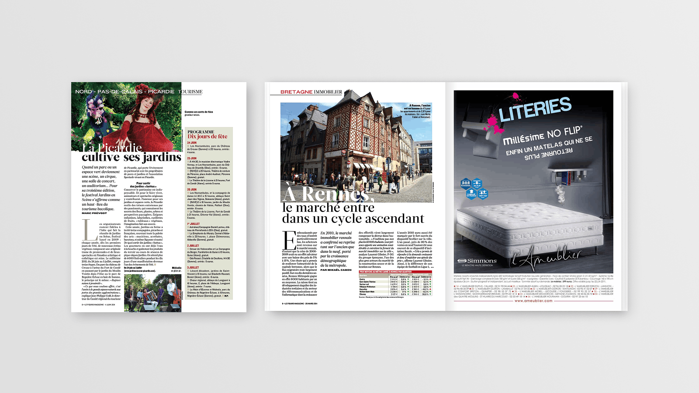

Crafting Editorial Design at Presso
Company
Presso
Industry
Agency • Editorial Design / Publishing
Role
Graphic Designer • Layout Designer
Responsibilities
Editorial Design • Composition • Typography • Color Harmony • Print Production

Overview
At Presso, a communication agency specializing in editorial production, I designed and crafted high-quality layouts for magazines and newspapers. Working with publications such as Madame Figaro, TV Magazine, and Nice-Matin, I transformed editorial content into engaging visual experiences through strong hierarchy, refined typography, and thoughtful composition. Operating in a fast-paced production environment, I balanced creativity with precision—adapting designs to tight deadlines while maintaining a high level of visual consistency and editorial quality. Each layout required careful attention not only to aesthetics, but also to readability, accuracy, and overall harmony within the publication.
My Role
Contributed to the end-to-end creation of editorial layouts, balancing creativity, precision, and speed in a fast-paced print production environment.
01.
Editorial Layout & Composition
Designed and produced layouts for magazines and newspapers, transforming raw editorial content into engaging visual narratives. Carefully structured each page to create rhythm, balance, and flow across spreads.
02.
Typography & Visual Hierarchy
Crafted clear and effective typographic systems to enhance readability and guide the reader’s eye. Paid close attention to spacing, alignment, and hierarchy to ensure clarity across complex and content-rich layouts.
03.
Color Direction & Visual Harmony
Developed cohesive color palettes that enhanced the editorial narrative and created visual interest. Ensured visual harmony across pages, creating cohesive compositions while adapting to external constraints.
04.
Collaboration & Print Production
Worked closely with journalists and editors to verify content accuracy and maintain consistency. Delivered meticulous, print-ready files under tight deadlines, often adapting quickly to last-minute changes.




